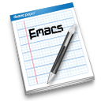

转载自：http://lifegoo.pluskid.org/?p=152 很不错的emacs扫盲文章

Emacs 生存指南
pluskid
2007 年 11 月
作为一个历史悠久的程序，网上有不少相关资料，总结一下，大致可以分为一下几类：
- 电子书：例如 O’ Reilly的《Learning GNU Emacs》以及 Sams系列的《Sams Teach Yourself Emacs in 24 Hours》等，从头至尾系统地讲解了 Emacs 的方方面面，非常详细。
- 文档：Emacs 自带了有交叉索引的文档，其中还包括 Elisp 介绍以及详细文档等，在 Emacs 里查阅非常方便。
- Blog 文章：多是介绍一些特性或者技巧之类的，比较零散。
- 个人笔记：这方面有许多中文资料，例如王垠的笔记、叶文彬的笔记以及我自己的一些笔记等等。相对于 Blog 文章要稍微系统一些。
- Wiki 形式的资源：如 Emacs Wiki 、The very unofficial dotemacs home 等，由不同的用户贡献的内容，比较全面。
不过我觉得其中似乎还有一个空缺。学习用一个编辑器，如果专门照着一本书去学，多少有些不必要，一来有些枯燥，二来写书需要照顾所有人，同时却又是众口难调，对自己来说有些东西根本用不到，学了不用也会很快忘记的。大多是看一个入门的东西，大概上手了，需要用的地方才花心思去 Wiki 呀、别人的笔记等地方找找资料、查查文档之类的。
但是从入门到能够自己轻松地自己查阅资料进阶学习似乎还是有一段距离，比如别人介绍 setnu.el 和 setnu+.el 可以让 Emacs 显示行号，说了半天却没有说如何安装，或者说了放到 load-path 下，你却不知道什么是 load-path 。总是有这样类似的一些问题阻止大家深入，抹杀了继续使用的热情。我觉得主要还是缺少一个引导大家从入门级别到 serious Emacser 的文档。所以我写了这篇文章，希望能有所帮助。
你可以在线阅读，或者下载 PDF 版本。
需要注意的是：阅读本文并不能让你成为一个 Emacs 专家，一是我自己的水平有限，二是 Emacs 太博大精深了，根本不可能在这样的篇幅内介绍完它所有的东西。打个比方：我希望本文能教会你识字的本领，这样你就可以通过自己读书来成为一个有学问的人了。
术语
因为 Emacs 的历史非常悠久，所以一些常用的词汇和我们现在所熟悉的意义或许会有所不同（比如 window ），但是要能看懂 Emacs的文档以及相关文章，一些基本的术语是必须要明确的。
快捷键
在 Emacs 里面使用快捷键基本上是必备技能了。如何描述一个快捷键一直没有一个统一的标准，例如与人交流的时候比较常见的表示法也许是 Ctrl+E 这样的，而在程序或配置文件里定义快捷键的时候却又是是五花八门。
Emacs 自成一派，不过它的表示法非常简洁明了。只要注意以下几点就可以了：
- 使用单个字符表示几个常用的修饰键：
- C : Control
- M : Meta ，通常 Alt 键被当作 Meta 使用
- S : Shift
- s : Super ，通常就是键盘上带 Windows 徽章的那个键
- 使用连字符而不是加号连接。例如“C-w”就表示同时按下 Control 和 w 键，或者先按着 Control 键不放，再按 w 键。“C-@”也是同样的道理，只是大多数键盘上不能直接输入“@”这个字符，需要用“S-2”来输入，所以“C-@”实际上是“C-S-2”了。
- Key sequence 之间用空格隔开。所谓 Key sequence 就是几个连续的快捷键了，例如地球人都知道的退出 Emacs 的快捷键就是 “C-x C-c”，表示先按 “C-x”这个组合键，再按“C-c”这个组合键，比较方便的按法是先按住 Control 键，然后依次按下并放开 x 和 c 键，最后放开 Control 键。
知道了这几条规则以后大部分快捷键都能很方便地写出来了，包括在和人交流、写文章以及配置文件的时候都是通用的。有一些特殊的快捷键想不到怎么写的，我在后面“C-h k”一节中会提供解决办法。
用户界面
在 Emacs 的用户界面中有四个名词需要注意：
- Window Emacs 中的 Window 不是指桌面上的由你的窗口管理器所管理的窗口，而是在 Emacs 自己的一个 Frame 中管理的 Window 。默认情况下只有一个 Window ，你可以横着或者竖着将 Window 进行分割。C-x 2 试一试!
- Frame 在图形界面下（例如 X window 或者 Microsoft Windows 中），一个 Frame 就是我们通常说的一个顶层窗口了。如果不明白，C-x 5 2 试验一下应该就知道了。Emacs中C-x 5 是专门用于Frame相关的操作的快捷键，许多关于Window的快捷键（例如 C-x o ）都可以以类比的方式对应到Frame上来（对应与 C-x 5 o ）。
- Buffer 一个 Buffer 就对应一个你可以编辑的地方了，如果你在 Emacs 中打开了一个文件，那么 Emacs 就创建一个对应该到该文件的 Buffer ，你可以在 Buffer 中编辑，直到你保存该 Buffer 为止，都不会影响到原文件的内容，也有一些 Buffer 并不关联到任何文件，例如刚打开 Emacs 时出现的 *Scratch* Buffer。通常在 Buffer 的名字两边加上星号表示这个 Buffer 不关联到某个文件。Buffer 和 Window 并不是一一对应的，一个 Buffer 可以同时在几个 Window 中显示出来，也会有一些 Buffer 暂时没有在任何 Window 中显示出来，不过你可以随时进行切换。
- Minibuffer MiniBuffer 在Emacs中是一个非常特殊的Buffer ，每个 Frame 最多只有一个 MiniBuffer 。它就是你在Emacs界面中看到的最下面的那一个小横条，通常是输入各种命令以及参数的地方，例如按下 M-x 手工调用某个命令的时候，Emacs就是在 MiniBuffer 中接受你输入的命令名的。不仅如此，它还被用来显示各种消息（例如文件正在被自动保存的消息）。可以说它基本上取代了我们平时在其他GUI程序中常见的各种弹出对话框的功能。
在编辑的时候MiniBuffer和普通的Buffer差别不是很大，一些常用的快捷键（如 C-a 、C-e 等）都可以用。不过它也有它特殊的地方，例如可以通过 M-p 、M-n 来切换历史命令（就是你之前在MiniBuffer中输入过的内容），并且许多时候可以通过 tab 来进行补全，并且补全还是很智能的，例如你用 C-x C-f 来打开文件的时候它会针对文件名进行补全，而用 C-x b 来切换 Buffer 的时候他会针对 Buffer 名称进行补全，非常方便。
其他常用术语
还有其他一些常用的术语，列举在此。
- 前缀参数
我们知道通过C-num可以重复执行一条命令，比如C-9 * 可以连续插入9个星号（插入一个字符叫做self-insert-command）。如果重复次数超过9了，需要用C-u来辅助，例如我通常用C-u 60 * 来插入60个星号，做成C代码里的注释框。
其实C-num或者C-u的职责并不是重复某个命令，而是将数字作为参数传递给要调用的命令。通常命令有一个（或更多）可选参数，C-u可以指定第一个参数，也就是前缀参数了。碰巧大部分情况这个参数都表示对命令进行重复了，但也有一些例外的情况，通常命令的帮助里都会讲到，有参数的情况下是怎么样的一个行为（注意找“With argument”的字样），例如常用的set-mark-command ，在有前缀参数的情况下并不是设置多次mark ，而是当前的mark ring 中弹出一个位置，也就是跳到上次set-mark的地方了。而像set-fill-column (C-x f)这样的命令甚至是必须要传递前缀参数的。
- 宏
Emacs中有两种宏：一种是所谓的“键盘宏”，主要用于避免重复劳动，一种是Elisp里面的宏，也可以说成是减少了编程时候的重复劳动吧。
大部分人接触前者比较多一些，因为键盘宏确实很好用。例如，你有如下几行代码：
stdio.h stdlib.h string.h time.h
现在把光标移动到第一行，按下F3开始录制宏，然后按下C-a跳到行首，输入“#include “”，再按C-e跳到行尾，再输入一个“””，C-n跳到下一行，然后按下F4结束宏录制。之后按下C-x e e e（或者 C-3 ）将宏重复播放三次就能把他们变成：
#include "stdio.h" #include "stdlib.h" #include "string.h" #include "time.h"
相比之下Elisp中的宏可能会接触得比较少一些。如果需要用Elisp来进行比较复杂的编程（例如，自己写一个扩展），可能需要掌握一下，因为宏确实是Lisp中非常独特的地方。
在线帮助系统
Emacs有非常强大的在线帮助系统，而且使用非常方便，通常情况下都能很快找到自己想要的东西，想要在 Emacs 中生存下去，这是必须学会的技能！
C-h 系列
如果Emacs的帮助文档是阿里巴巴宝藏，那么“C-h”就是“芝麻开门”了！基本上所有的帮助命令都以C-h为前缀。
- C-h t
打开Emacs的入门教程，我想这应该是大多数人都推荐每一个初学者首先应该看的东西吧，包括需要熟悉的一些基本概念和常用快捷键的介绍和练习等。同其他Emacs的官方文档不同，这个入门教程有各国语言的版本，其中还包括一个简体中文的版本，如果你的Emacs版本比较新的话，应该已经带有简体中文的版本了。Emacs会根据你的语言设置自动选择合适的版本。
- C-h k
让 Emacs 告诉你某个快捷键是什么作用。首先按下 C-h k ，然后 Emacs 会等待你按下你想要知道的快捷键，之后它会告诉你你按了什么键，这个键绑定到了什么命令上（如果有的话）以及该命令的介绍。还有一个很巧妙的用处就是在你定制快捷键却不知道这个快捷键该如何写的时候，就让Emacs来告诉你。
比如你想要把 “Alt+空格”绑定到 set-mark-command 上，可是又不知道“Alt+空格”在 Emacs 里应该如何表示，并且经过试验发现“M- ”是不行的。这个时候就需要 C-h k 来帮忙了。按下 C-h k 再按下“Alt+空格”，Emacs就会在弹出的Buffer中显示如下内容：

看到第一行的“M-SPC”了吗？这就是你想要的！
另外，在 Emacs 中，快捷键并不只局限于键盘，试着按下 C-h k ，然后用鼠标选择菜单栏中的某一个菜单项，看看 Emacs说什么？;)
它还有一个同胞兄弟 C-h K ，注意这次是大写的 K 。对于Emacs的一些内部命令，除了Elisp源代码中提供的文档以外，还有一个专门的 Info 文档进行了系统的介绍。C-h K 就是定位到 Info 文档中描述该命令的位置。
- C-h f
按下 C-h f 并输入函数名（可以通过 tab 来补全），Emacs 就会给你该函数的详细描述。除此之外，如果这是一个绑定到了某个快捷键上的命令，Emacs 还会显示出该快捷键，这个功能非常贴心！
如果你有相应函数的源代码，点击Emacs给的链接可以直接定位到源码中函数的定义处。在Debian中只需要安装对应的emacs-el 包就可以直接定位到Emacs自带的Elisp 源代码中了。如果是你自己编译的Emacs ，甚至连“car”这种由C语言编写的基础核心函数也能直接定位到相应的C代码！
- C-h v
说起自定义程序的话，最基本的方式应该是设置一些预定义的变量了，Emacs 中也不例外。例如，通过设置 inhibit-startup-message 变量，可以禁用启动画面。可是有这么多的变量，不可能全部记住。这个时候又需要 Emacs 的在线帮助系统来帮忙了。
按下 C-h v ，然后输入变量名（同 C-h f 以及许多其他命令一样，可以通过 tab 来补全），Emacs 就会告诉你该变量的出处、变量的作者给出的帮助信息以及变量当前的值。同函数一样，也可以通过点击链接的形式直接打开源文件并定位到该变量定义的地方。
更可贵的是，这些在线帮助以及索引是Emacs自动生成的，只要在书写 Elisp代码的时候遵循一定的约定，在Elisp文件被加载的时候，文件里定义的变量以及函数相关的文档就被Emacs加载进索引中了，完全不需要额外的干预。
- C-h m
Emacs为不同的文件类型提供不同的编辑环境，称作mode 。有时候想要得到关于当前mode的使用帮助、状态描述以及可用的快捷键列表等，只需要按下C-h m就一目了然了！
- … C-h
有芝麻开门，自然就有芝麻关门！C-h可以当前缀用，也可以当后缀用。我时常记不住矩形操作的几个快捷键，但是我知道它们是以C-x r 为前缀的，于是我按下 C-x r ，然后再按下 C-h ，Emacs 就会列出所有以 C-x r 为前缀的快捷键以及对应的命令了。实际上这个功能应当是Emacs中最鲜为人知的小技巧之一了。
- C-h C-h
作为一个最大的例外，C-h C-h 并不是列出所有以 C-h 为前缀的快捷键，而是给出许多帮助相关的选项。如果记不住前面的几个快捷键，只需要记住 C-h C-h 即可，Emacs会给你必要的提示，包括前面介绍的以及其他更多的帮助选项：

更模糊的查找
虽然 C-h f 和 C-h v 可以使用 tab 进行补全，但是必须要知道一个前缀才行。有些时候只知道一个关键字，却不一定是前缀，这个时候可以用 C-h a 来通过正则表达式来查找命令名。Emacs会列出所有匹配的命令以及一个简短的文档，并可以通过点击链接定位到该命令的详细文档。
C-h a 只会查找命令，如果需要匹配所有的函数以及变量的话，可以使用 M-x apropos 。如果这都找不到想要的结果的话，你可以考虑用 C-h i 来打开Emacs的Info文档尝试通过目录结构和索引找到自己想要的东西。当然 Info 其实本质上是一个文本文件，所以这个时候可以使用Emacs的查找或者正则表达式查找功能直接搜索Info文档，这个比apropos好的地方是关键字并不局限于函数或变量的名字。
如果这都还不能满足你的需求的话，我只有向你推荐Google了。;)
定制 Emacs
Emacs的强大之处在于它的极高的可定制性，如果你想把Emacs用得随心所欲，就必须得学会如何定制它了。我将在这里介绍一些最常用的定制方式，应该能满足平时大部分的需求。我这里介绍的只是定制方式，至于特定的功能如何定制，还需要你自己运用前面讲的获取帮助的办法以及通过查阅网上资源的方式自己去摸索了。
setq
通常大部分软件都支持的最平凡的定制方式就是设置预定义的一些变量的值了。Emacs中也不例外，可以通过setq设置变量值的方式来进行许多定制，它的基本用法如下所示：
(setq variable value)
把变量variable设置为值value 。其实这是一条最基本的Elisp语句。在Elisp中通常用括号括起来表示一个函数调用，括号里第一个元素是函数名，后面的元素则是函数接受的参数。例如setq就是用于设置变量的值的函数，通过设置变量的值来改变Emacs的工作方式。不过这其实并不是Emacs中最常用的定制方式，我们平时用得最多的应该还是函数调用式的，通过调用预定义的函数来加载、打开或者关闭某个功能。比如：
(mouse-avoidance-mode 'jump) ; 光标靠近鼠标时让鼠标自动走开 (tool-bar-mode -1) ; 关闭工具栏
下面一个定制 ido 的例子应该是个典型了，首先通过require函数加载ido ，然后通过设置ido预定义的一些变量来定制ido的行为，最后通过调用ido-mode函数来打开ido功能：
(require 'ido) (setq ido-enable-prefix nil) (setq ido-enable-case nil) (ido-mode t)
快捷键绑定
除了简单地定制Emacs提供的各种功能的行为之外，定制快捷键应该是需求最大的定制方式了。最著名的一个例子应当属于Emacs 的set-mark-command了。这是Emacs中最常用的功能之一，它有默认有两个可用的快捷键，一个C-SPC 和系统激活输入法的快捷键冲突，另一个C-@ 按起来太麻烦。一般中日韩的Emacser都会另外设置一个快捷键（英语系的不用输入法，所以不会有 C-SPC冲突的情况）。
在Emacs里设置快捷键主要有两种方式，分别通过global-set-key和define-key两个函数来实现。
- global-set-key
顾名思义，global-set-key就是设置全局快捷键了。它的语法是：
(global-set-key key command)
需要解决两个问题：key写什么？command写什么？
key 那里要写成Emacs能明白的形式，有些复杂，幸运的是我们可以让kbd宏来帮忙。首先通过前面讲的 C-h k 的办法找到快捷键的“标准写法”，例如“M-SPC”，然后把这个“标准写法”放到字符串里面作为kbd宏的参数，它会自动将其转换成Emacs能识别的格式，例如：
(global-set-key (kbd "M-SPC") 'set-mark-command)
再举一个例子，把 Ctrl+F9绑定到编译命令上：
(global-set-key (kbd "<c-f9>") 'compile)
注意要严格按照Emacs告诉你的那个格式写，例如在上面一个例子里不要省略了尖括号。
至于command那里写什么，通常情况下就是如上面两个例子所示，一个单引号（在Elisp里就表示quote了）加上对应的命令的名字。通常你已经知道自己要绑定的命令的名字了，如果不确定可以通过C-h f 或者 C-h a 来查一下。 - define-key
本来global-set-key应该对应到local-set-key ，其实也确实有这么一个函数，用于为当前buffer （通常会影响到当前同一类型的所有buffer），不过一般都直接通过define-key为某个mode设定快捷键映射。用法如下：
(define-key keymap key command)
其中key和command都是和global-set-key类似的，不过现在需要指定为哪个mode定义快捷键。例如在编辑C程序的时候将F9绑定到编译命令上：
(define-key c-mode-map (kbd "<f9>") 'compile)
其中c-mode-map就是对应到c-mode的keymap ，一般各个mode都有独立的keymap ，并且以mode的名字加上 –map 来命名。
mode & hook
为了适应各种不同的编辑情况，Emacs以mode来组织各种不同的编辑环境。通常每种文件类型有一个独立的major-mode ，管理与该文件类型匹配的语法高亮、缩进、注释之类的东西，另外还有一些称作minor-mode的mode ，它们可以附加到任意major-mode上，一般是起增强和修饰作用，例如flyspell-mode可以在当前major-mode下打开拼写检查功能。
定制某个特定的mode除了通过设置快捷键和修改一些该mode提供的变量之外，还有一个非常方便的方法：通常major-mode都会提供一个hook ，如果遵循命名规范的话，通常是mode的名字加上 –hook ，在进入这个major-mode 的时候会调用对应的hook里加入的函数，因此可以方便地通过hook来在进入某个mode之后执行一些代码来达到定制的目的。例如：
(add-hook 'c-mode-hook
'(lambda ()
;; 自动换行功能
(c-toggle-auto-newline 1)
;; 此模式下，当按Backspace时会删除最多的空格
(c-toggle-hungry-state)
;; 显示目前光标在哪个函数里面
(which-function-mode t)
(auto-fill-mode t)
;; 不使用 tab 作为缩进字符
(setq indent-tabs-mode nil)
(c-subword-mode 1)))
使用lambda创建一个匿名函数，添加到c-mode的hook里，当进入c-mode的时候（也就是打开一个 .c文件的时候）就会调用我们添加进去的那个匿名函数，从而执行函数体里的那些代码，包括打开auto-newline功能、打开c-subword功能等。
lambda, function & command
在“mode & hook”一节我们讲到了用lambda来创建匿名函数，其实定制Emacs的时候时常要用到。在Elisp中创建匿名函数或者命名函数都很简单。比如下面这个lambda的例子：
(lambda (x y) (message x) (message y))
lambda 后面紧跟着是参数列表，这里表示接受两个参数x和y ，然后是函数体了，这里用message函数分别把x和y在minibuffer里面显示出来。命名函数也是类似的，不过把 lambda 换成了defun 和函数名，例如：
(defun foo (x y) (message x) (message y))
另外，Elisp还允许为函数指定文档，紧跟在参数列表之后，例如：
(defun foo (x y) "Show X and Y in minibuffer. You may not see X in minibuffer because it is replaced by Y, but you can go to the *Messages* buffer and see it." (message x) (message y))
你可以用前面介绍的方法来查看foo的文档，那正是由你写在参数列表后面的这个字符串生成的。
另外，在Emacs中有一类特殊的函数，称为command ，它们可以被用户交互地调用（例如，绑定到某个快捷键上，或者通过M-x 输入命令名进行调用）。普通函数并不能通过交互方式直接被调用，要定义一个command ，需要在函数的文档字符串（如果有的话）之后调用interactive 。interactive 可以用于描述command所接受的参数以及如何获取这些参数等，详情可以参见Elisp手册里的相关内容。下面是一个例子，用于给一段文本加上一个很Cool的边框：
(defun kid-cool-box (title begin end)
"Wrap the region with a cool box.
The result is like this:
,----------[ Title ]
| This is the marked region
| that will be boxed
`----------
"
(interactive "sTitle: /nr")
(setq end (copy-marker end t))
(save-excursion
(goto-char begin)
(unless (looking-back "^")
(insert "/n"))
(insert ",----------[ ")
(insert title)
(insert " ]/n")
(while (< (point) end)
(insert "| ")
(next-line)
(beginning-of-line))
(goto-char end)
(unless (looking-back "^")
(insert "/n"))
(insert "`----------/n")))
若是能自己熟练地写出这样的小工具函数出来，几乎就能够随心所欲地定制 Emacs 了。整个函数里都是一些很基础的语句，加上Emacs强大的在线帮助系统，其实写这样的小函数还是比较轻松愉快的事情。
安装第三方扩展
虽然Emacs具有高度的可定制性，但是所有事情都自己去做终究是很麻烦的，网上有许多好用的第三方扩展可以直接拿来使用，毕竟重复发明轮子是geek们很忌讳的事情，所以若是你自己也写了一些好用的扩展，别忘了拿到网上去与大家分享！
比较奇怪的是Emacs发展了四十多年，竟然没有一个方便的插件管理系统，像Eclipse的plugin 、Firefox的extension以及Textmate的bundle等系统都是很方便的。相比之下Emacs的插件分布就比较分散了（虽然大都能在Emacs wiki 上找到），虽然也有一些约定，但是通常各个扩展的安装方法都有一些差异，目前还没有一个统一的管理办法，最好的办法就是安装的时候按照附带的README或者INSTALL文件中描述的步骤来，有些单文件的扩展直接把安装方法写在了文件开头的注释里面。
通常单文件的扩展都提供require的加载方式，只要把文件放到load-path下再require对应的功能就可以了，例如：
(require 'template)
其中 load-path 是Emacs需要加载文件的时候寻找的路径。这实际上是一个list ，里面依次列出了Emacs将要查找的路径，就类似于Shell里面的PATH 。例如，如果你把要安装的扩展的脚本文件放在了~/emacs/extension 中，就可以这样把它加入到 load-path 中：
(add-to-list 'load-path "~/emacs/extension" t)
最后一个参数t用于指定把你添加的路径加到表的末尾，一般都建议都添加到末尾，但特殊的时候也可以直接加在开头，一般是用于覆盖Emacs自带的一些功能，例如安装独立的 speedbar 或者TRAMP 等，需要把单独的扩展的路径加到 load-path 的前面，这样在加载的时候就会优先加载第三方的文件而不是 Emacs 自带的那些了。
通常我把所有的单文件扩展放在一个目录里，而那些有许多文件的扩展放在他们各自的目录中。比较大的扩展一般提供有 Makefile ，可以直接通过make进行安装，它们一般还会安装 Info 文档之类的到系统对应的目录中，所以有时候还会需要 root 权限。


 556
556